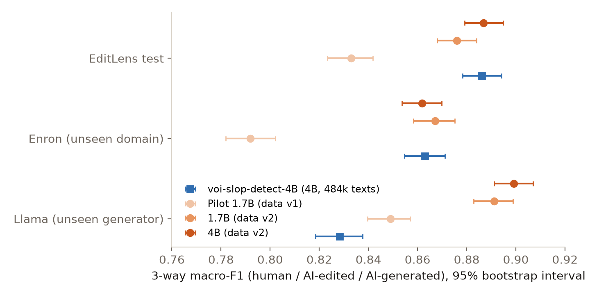
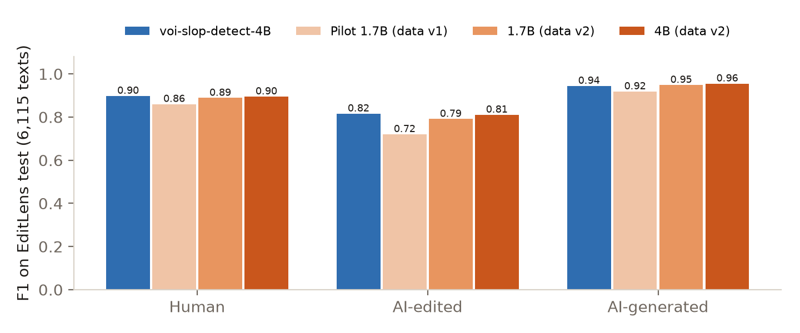
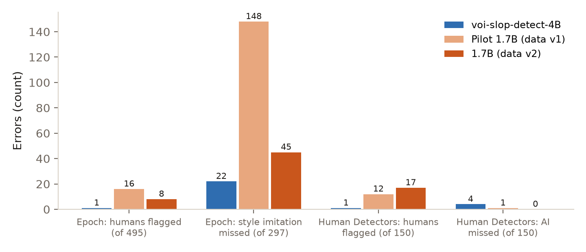

← Research·Experiments·
Slop detector: a 4B + 1.7B ensemble beats voi-slop-detect-4B on EditLens when both are calibrated (0.909 vs 0.888)
voi-slop-detect-4B scores how much of a text an LLM wrote, and its card describes the recipe but not the data. We rebuilt the data from the card with open-weight models only and trained Qwen models on it. With cut-offs fitted on EditLens’s validation split, our 4B + 1.7B ensemble scores 0.909 on EditLens test against voi’s 0.888 given the same calibration: +0.020 [+0.013, +0.028], paired on the same rows, from the fourth look at these test sets. At voi’s shipped cut-offs our single 4B matches it (0.887 vs 0.886). It is also a seven-lesson course: every step is a script you can run.
![Vertical bar chart on a cream background of 3-way macro-F1 on EditLens test, on an axis from 0.85 to 0.925 with the break marked. Our 4B plus 1.7B blend, calibrated, in orange with the Qwen and steerlab marks: 0.909 with its interval. voi-slop-detect-4B calibrated in dark grey: 0.888. voi-slop-detect-4B as shipped in light grey: 0.886. EditLens 24B as a dashed hollow bar labelled published, unpaired: 0.904. A line above reads: ours +0.020 [+0.013, +0.028] vs voi, both calibrated.](figures/hero.jpg)
Summary: the short answer and the key results
In short
Can a published AI-text detector be rebuilt from its model card alone, with open-weight models writing the training data?
Yes, and with a calibration step it does better. With cut-offs fitted on EditLens’s own validation split, an ensemble of our 4B and 1.7B scores 0.909 on EditLens test; voi-slop-detect-4B given the same calibration scores 0.888, so ours is ahead by +0.020 [+0.013, +0.028] on paired resamples (the fourth look at these test sets; EditLens’s own 24B model is listed at 0.904, unpaired). Without that step: voi-slop-detect-4B reaches 3-way macro-F1 0.886 on EditLens test (human, AI-edited, AI-generated). The same base model, Qwen3.5-4B, trained with the card’s recipe on our rebuilt data reaches 0.887 on the same 6,115 rows: +0.001 [−0.007, +0.008], a match. It ties on the unseen Enron domain (0.862 vs 0.863), beats the original on unseen Llama text (0.899 vs 0.828), and on Epoch AI’s test it misses 8 of 297 texts written to imitate a named author where the original misses 22. It flags a few more human texts at its own cut (4 of 150 magazine articles against 1); at the original’s cut it flags none and still misses fewer imitations. A Qwen3-1.7B on the same data comes within 0.010 (0.876). The data mattered more than the size: a first version of the data, without light edits, imitation or long human prose, gave the 1.7B 0.833.
Key results
| What we tested | Result | Compared with |
|---|---|---|
| Does our scoring of the original reproduce its card? | Yes, to the third decimal: EditLens test 0.886 (human 0.898, AI-edited 0.816, AI-generated 0.944), Enron 0.863, Llama 0.828; Human Detectors 1 human flagged and 4 misses; Epoch AI 1, 0 and 22 | The card: the same numbers (Llama 0.829) |
| Does the rebuilt 4B match the original on EditLens test? | Yes: 0.887 [0.879, 0.895]; per class 0.895 / 0.811 / 0.955; AUROC 0.978 | voi-slop-detect-4B on the same rows: 0.886 [0.878, 0.894], difference +0.001 [−0.007, +0.008]; AUROC 0.977 |
| Out of distribution? | Enron (unseen domain) 0.862, a tie: −0.001 [−0.009, +0.007]. Llama (unseen generator) 0.899, ahead: +0.071 [+0.060, +0.081] | voi-slop-detect-4B: 0.863 and 0.828 |
| Does it catch AI text written to imitate a person? | Better than the original: 8 of 297 Epoch AI style imitations missed (Claude 0, Gemini 5, GPT-5.5 3); 0 of 297 plain-prompt passages; 0 of 150 Human Detectors AI articles, paraphrased and humanized included | voi-slop-detect-4B: 22 (2, 12, 8), 0 and 4 |
| Does it accuse humans? | A little more at its own cut (1% of our validation humans): 4 of 150 Human Detectors articles, 3 of 495 Epoch AI passages. At the original’s cut (0.385): none of either, with 14 imitations missed | voi-slop-detect-4B at its cut: 1 and 1, with 22 imitations missed |
| Does a smaller model do it? | Nearly: Qwen3-1.7B on the same data 0.876, −0.010 [−0.017, −0.002] on EditLens test; level on Enron, ahead on Llama (0.891); but 17 of 150 human articles flagged and 45 imitations missed | The 4B on the same data: +0.011 [+0.005, +0.017] over the 1.7B |
| Did fixing the data help? | Yes: data v2 (light and partial edits, style imitation, long human prose, stronger editors) lifted the 1.7B from 0.833 to 0.876 and cut Epoch imitation misses from 148 to 45 | The pilot 1.7B on data v1, same recipe |
| With cut-offs fitted on EditLens’s own validation split (its definition of an edit), for both detectors? | A blend of our 4B and 1.7B reaches 0.909 on EditLens test, 0.889 on Enron and 0.937 on Llama. Given the same calibration, voi-slop-detect-4B reaches 0.888, 0.873 and 0.810: ours is ahead by +0.020 [+0.013, +0.028] on EditLens test (a fourth look at the test sets; section 4.6) | EditLens’s 24B cosine model: 0.904, 0.866, 0.850 (its card, unpaired) |
| Did the pre-registered validation gate pass? | No, by 0.0004; the 4B was trained by decision, not by the rule, and its benchmark scores are a second look at the same test sets (section 4.7) | — |
01Introduction
Paste a Hacker News comment from 2022 into a good AI-text detector and it should say “human”. Ask an LLM to fix that comment’s grammar and it should still say “human”, because a person wrote it. Ask the LLM to rewrite it in its own words and the answer should drift toward “AI”. Ask it to write a new comment from a two-line summary and the answer should be “AI”. voi-slop-detect-4B is built to give exactly that graded answer: one number from 0 to 1 for how much of the text an LLM wrote.
What is known. voi-slop-detect-4B (VoightKampffLabs, Apache-2.0) is Qwen3.5-4B with a one-number head, trained on 484k texts built from 98k human documents written before 2023. On EditLens, a benchmark for scoring how much AI edited a text, it is within 0.02 of EditLens’s own 24B models and well ahead of commercial detectors. Its card describes the data recipe in detail but publishes no data.
What is missing. A card is a claim. Without the data, nobody outside the lab can check how much of the result comes from the recipe and how much from the particular texts, or whether the recipe works without the closed models that wrote much of its data (about 15% of its AI rows came from Anthropic models, more from OpenAI’s and Google’s).
Following only the model card, and using only open-weight models to write the training data, how close can we get to voi-slop-detect-4B on the same benchmark rows?
What this note does. It rebuilds the data and the training from the card, scores the original and our models on identical rows, and writes each step up as a lesson. Its contributions:
- A check that the original’s published numbers reproduce exactly when we score it ourselves.
- An open recipe for the training data: seven pre-2023 human sources, the card’s three kinds of AI version plus three of ours, eleven open-weight generators, filters and benchmark decontamination.
- A measured replication: the same base model on that data matches the original on EditLens test, ties it on Enron, beats it on unseen Llama text and on style imitation, and flags a few more humans at its own cut.
- A data ablation (v1 against v2) and a size comparison (1.7B against 4B) that show the data moved the score more than the size, and an honest account of a validation gate that narrowly failed.
- Seven runnable lessons, from reading the card to a 4B run.
Success, fixed before the first model was trained: (1) the original’s numbers reproduce on our scoring; (2) the comparison is on the same rows with paired intervals; (3) no benchmark text is trained on; (4) the result holds out of distribution (Enron, Llama), not only on EditLens test.
02Setup
2.1 What the original predicts
The detector reads the first 512 tokens of a text (fenced code emptied) and outputs one logit; sigmoid(logit) is the score. Two cut points from its bands.json turn the score into three classes: below 0.15 human, 0.75 or above AI-generated, AI-edited between. A third cut, 0.385, flags a text as not human; it was set so that 1% of the authors’ validation human texts are flagged. We use the same band edges for our models, and fit our own flag cut the same way, on our own validation humans.
The label it is trained on is the share of words changed. A worked example from lesson 4, on one 18-word review: fixing only punctuation changes 0% of the words (human band); “make it concise” changes 45% (AI-edited); “rewrite it in your own words” changes 78% (AI-generated). A text written from scratch by a model gets 1.
2.2 Rebuilding the data, twice
Human text. Text written before ChatGPT’s release (November 2022) is human by date, so nobody has to label it. We took one public file per source on the card: Amazon reviews (2020–21), arXiv abstracts (2020), Hacker News comments (2022), Medium posts (2020–21), Reddit comments (2020–22, ten subreddits), Stack Overflow posts (2022) and BBC news (XSum, 2017). r/WritingPrompts is left out because it is an EditLens test source. The split (80 / 10 / 10) is a hash of the document id, so a human text and its AI versions always share a split.
AI versions (data v1, the card’s three). A mirror is written from a two-line summary and keywords; the writer never sees the original, so every word is the model’s (target 1). A rewrite follows one of eight instructions, from “fix the grammar” to “rewrite in your own words” (target: share of words changed). A round trip goes to Spanish, German or Russian and back (target: share changed). Generators: gpt-oss-120b and 20b, DeepSeek-V3.2, Qwen3-235B-A22B and Qwen3-Next-80B, Gemma 4 31B and 26B-A4B. Only open-weight models wrote training text, so the recipe can be rerun without closed APIs. Llama is left out so that EditLens’s Llama split stays an unseen generator, as it is for the original.
Filters, as on the card, plus two of ours. Texts under 30 prose words; edits that changed under 2% of the words; edits whose meaning drifted (embedding cosine to the source below 0.75); mirrors off topic (cosine below 0.35); non-English text (the XSum file holds some Welsh articles); and any human document sharing three 10-word runs with a benchmark text, which dropped 104 documents, mostly BBC articles that EditLens’s news texts also contain.
Data v2 came from reading the pilot’s errors on its own validation split and on EditLens (section 4.2): light AI edits were being called human, style imitation was missed, and the flag cut was too strict on long human prose. It adds 13,962 human documents (a second batch from the same seven sources, 2,000 longer Medium and XSum passages of up to 550 words, and 1,462 passages from pre-1919 books in PG-19) and 49,027 AI versions: partial edits that reword a third to two thirds of the sentences, five light edit instructions, 3,000 style imitations (shown three human texts of a kind, write a new one), and four larger open editors at a low weight (Qwen3.5-397B-A17B, Qwen3.5-122B-A10B, GLM-4.6, Kimi-K2-Instruct-0905).
| Human docs | AI versions | Training rows | Train bands (human / edited / generated) | |
|---|---|---|---|---|
| Data v1 (pilot) | 11,200 | 33,589 | 33,270 | 32% / 40% / 28% |
| Data v2 | 25,162 | 82,616 | 79,120 | 43% / 30% / 26% |
| The card | 98k | 386k | about 387k | not given |
2.3 Model and recipe
The card’s recipe: a sequence-classification head with one output on a Qwen base model; LoRA rank 16, alpha 32 on every attention and MLP projection (for Qwen3.5 also its linear-attention projections), the head trained in full; binary cross-entropy against the soft target, each row weighted so that the three bands pull equally; learning rate 2e-4, batches of at least 64 rows, the first 512 tokens. BCE with a target of 0.43 is lowest when the model outputs 0.43, so the model learns the fraction itself, not a yes or no. Bases: Qwen3-0.6B-Base and Qwen3-1.7B-Base, and Qwen3.5-4B, the original’s own base. The one change from the card: the 4B trained for 2 epochs, not 3, to fit the compute budget.
2.4 Benchmarks
All test only; none of their text is trained on. EditLens test (6,115 texts: news, Reddit writing prompts, FineWeb-Edu, Amazon and Google reviews, edited or written by GPT-4.1, Claude Sonnet 4, Gemini 2.5 Flash and Llama-3.3-70B), test_enron (6,147 emails, an unseen domain) and test_llama (5,957, an unseen generator). Human Detectors (300 magazine and news articles, 150 by humans, 30 per AI condition, from the EditLens repository). Epoch AI’s detector test (495 human passages by 99 authors, 297 plain-prompt and 297 style-imitation passages by Claude Opus 4.8, GPT-5.5 and Gemini 3.1 Pro). The original is scored on every one of these rows by the same code as ours.
03How the study was run
- Original measured first: voi-slop-detect-4B (pinned revision) on all 19,608 benchmark texts, one per forward pass; numbers checked against its card.
- Data v1: 11,200 human documents; 33,589 AI versions from about 53,000 generation calls; labelled and filtered into 41,283 rows.
- Pilot: Qwen3-0.6B and 1.7B trained on data v1; the 1.7B chosen on validation (macro-F1 0.911 against 0.898); both scored once on the benchmarks.
- Data v2: designed from the pilot’s errors; 13,962 more human documents and 49,027 more AI versions; 98,332 rows.
- Gate, written and committed before any v2 result: the v2 1.7B goes on to a 4B run only if it beats the v1 1.7B on all v2 validation rows (paired 95% interval above 0) and is not worse on the pilot’s own validation rows (interval’s lower end above −0.010). The v1 1.7B was retrained for this comparison with the same seed.
- v2 1.7B: trained, compared on validation (the gate missed by 0.0004), then scored once on the benchmarks.
- 4B: trained on data v2 by the author’s decision after the gate result, with its settings fixed at launch; its flag cut fitted on validation; scored once on the benchmarks.
- Cut-offs on our validation split (third look): pre-registered, then the band cut-offs and a 4B/1.7B weight were chosen on our validation split and scored once. It did not help (section 7).
- Cut-offs on EditLens’s validation split (fourth look): pre-registered, then the same three numbers were chosen on EditLens’s validation split (2,396 texts, after dropping 4 that share a text or a source with a test split) and scored once. A control, pre-registered before it ran, gave voi-slop-detect-4B the same calibration.
| Fixed before any training | Changed after reading results |
|---|---|
| The card’s recipe and band edges; the benchmarks and the test-only rule; the generator rule (open-weight, no Llama); the filters and decontamination; the paired bootstrap; the flag-cut rule (1% of our validation humans); the v2 gate and its bounds | Data v2 (from the pilot’s validation and benchmark errors, so EditLens test informed the v2 design: see section 7); the choice of the 1.7B over the 0.6B (on validation); going ahead with the 4B despite the gate; its 2 epochs (from the compute budget, not from results) |
Conditions: training and scoring on rented GPUs on Modal (H100 for the Qwen3 models; A100-80GB for Qwen3.5, whose linear-attention kernels refuse Hopper GPUs with the PyTorch 2.9 Triton build), transformers 5.22, PEFT 0.21; generation through Hugging Face Inference Providers; labelling, decontamination and figures on a laptop. The v2 1.7B trained for 2.3 hours on one H100; the 4B for 3.3 hours on one A100-80GB, with gradient checkpointing.
04Results
4.1 Our scoring of the original reproduces its card exactly
On all three EditLens splits, Human Detectors and Epoch AI, voi-slop-detect-4B scored by our code gives the card’s numbers to the third decimal: 0.886 on EditLens test with per-class F1 0.898 / 0.816 / 0.944, 0.863 on Enron, 0.828 on Llama (the card says 0.829), 1 human flagged and 4 paraphrased GPT-4o articles missed on Human Detectors, and 1 human flagged, 0 plain and 22 imitation passages missed on Epoch AI. Every later comparison uses these exact scores, row by row.
4.2 The pilot on data v1 learned the recipe but not the light edits
The 1.7B reached 0.911 on its own validation split and 0.833 on EditLens test, 0.053 [0.044, 0.062] behind the original; the 0.6B reached 0.788. The gap between our validation and EditLens (0.08) was larger than the gain from a bigger model (0.045), which pointed at the data. The errors said where: of EditLens’s 2,031 AI-edited texts, the pilot put 615 in the human band (the original, 395). Most of our rewrites changed 45–60% of the words, so lightly edited text was rare in training. On Epoch AI it missed 148 of 297 style imitations: it had never seen one.
4.3 With data v2, the same base model matches the original on EditLens and beats it on Llama

Figure 1 shows the result. On EditLens test the rebuilt 4B scores 0.887 against the original’s 0.886: +0.001 [−0.007, +0.008] on paired resamples, a match. On Enron, emails neither model saw, the two are level: −0.001 [−0.009, +0.007]. On Llama text the rebuild is ahead by 0.071 [0.060, 0.081], almost all of it on fully generated text: F1 0.984 against 0.820. AUROC, which only asks whether human texts score lower than the rest and ignores the cut points, is level or slightly higher on all three (0.978 vs 0.977, 0.982 vs 0.978, 0.985 vs 0.982).

Figure 2 splits EditLens test by class. AI-edited text is the hardest class for both models, and the same texts are hard for both: their scores correlate at 0.98 over the 6,115 texts, and they put 93% of them in the same band (the cover). On Enron the rebuild gives up a little on human and edited emails (−0.012, −0.015) and gains it back on generated ones (+0.024).
4.4 A 1.7B on the same data comes within 0.010
Qwen3-1.7B on data v2 scores 0.876 on EditLens test, −0.010 [−0.017, −0.002] behind the original and −0.011 [−0.017, −0.005] behind the rebuilt 4B; on Enron it is level with both (0.867), and on Llama it is ahead of the original (0.891) and a little behind our 4B (−0.008 [−0.014, −0.001]). Its gap is mostly AI-edited text (0.791). For comparison, the original’s own ablation table, on its held-out split, has its Qwen3.5-0.8B 0.015 behind its 4B.
4.5 The 4B misses fewer imitations than the original, and flags a few more humans at its own cut

Figure 3 shows the yes/no question. The rebuilt 4B misses 8 of 297 Epoch AI passages written to imitate a named author, where the original misses 22: Claude Opus 4.8 0 against 2, Gemini 3.1 Pro 5 against 12, GPT-5.5 3 against 8. Both miss none of the plain-prompt passages, and the rebuild misses none of the 150 Human Detectors AI articles, including the 30 paraphrased GPT-4o ones the original misses 4 of. The 3,000 style imitations in data v2 are the likely reason: the pilot, which had none, missed 148. In return, at its own cut the 4B flags 4 of 150 human articles and 3 of 495 Epoch human passages, where the original flags 1 of each.
That last difference is about the cut, not the ranking (AUROC on Human Detectors 1.000 against 0.9985, on Epoch AI 0.998 against 0.993). At the original’s cut, 0.385, the 4B flags no human text on either benchmark, misses no Human Detectors AI article, and misses 14 imitations: fewer errors than the original in every cell. The 1.7B shows the same effect more strongly: 17 human articles flagged at its own cut, 3 at the original’s. Our validation humans are mostly short comments and reviews, and a cut that flags 1% of those is low for 500-word magazine prose. This second reading at 0.385 was computed after the benchmark results were seen, and nothing was chosen from it.
4.6 With cut-offs fitted on EditLens’s validation split, ours stays ahead of voi given the same calibration
Our training label is the share of words changed, so a light AI edit gets a score near 0.1 and falls in the human band. EditLens labels a text by how it was made: any AI edit counts as edited. That mismatch costs our model on the AI-edited class. EditLens ships a validation split (2,400 texts, the same domains and generators as its test split) for exactly this kind of calibration, and its authors use it to set their own cut-offs. We dropped the 4 validation texts that share a text or a source document with a test split, and on the remaining 2,396 chose three numbers by a rule written down first: the weight of the 4B against the 1.7B in an average of their scores, and the two cut-offs. The rule chose 80% 4B, a human cut-off of 0.055 and a generated cut-off of 0.86.
On EditLens test that scores 0.909 [0.902, 0.916], against 0.886 for voi-slop-detect-4B with its shipped cut-offs. Per class: human 0.905, AI-edited 0.860, AI-generated 0.962 (voi: 0.898, 0.816, 0.944). It also scores 0.889 on Enron and 0.937 on Llama. That is not a like-for-like comparison, because voi did not get the same help. So, as a control written down before it ran, voi’s cut-offs were fitted on the same 2,396 texts by the same rule (0.05 and 0.825). Calibrated, voi scores 0.888 on EditLens test (+0.002 over its own cut-offs), 0.873 on Enron and 0.810 on Llama. Ours stays ahead of calibrated voi on all three: +0.020 [+0.013, +0.028], +0.017 [+0.009, +0.025] and +0.127 [+0.116, +0.137]. The calibration helps our scores much more than voi’s: ours carry more information about light edits than the fixed 0.15 cut-off let through.
Four things qualify this result. It is the fourth look at these test sets. The setting averages two models, not one. It is one training seed. And it uses EditLens’s own definition of an edit, through its validation split, which a detector meant for other texts would not have. For the yes/no questions the flag cut stays fitted on our own validation humans: Human Detectors 7 of 150 humans flagged and 0 AI articles missed, Epoch AI 3 of 495 humans flagged and 8 imitations missed. EditLens’s own 24B cosine model, also calibrated on its validation split by its authors, is listed at 0.904 on EditLens test and 0.866 on Enron (its card’s numbers, not paired with ours).
The result holds on texts no one here had scored before. On 6,000 texts drawn from EditLens’s train split (2,000 per class, never trained on by us or, by its card, by voi, and frozen before any score was computed), the same calibrated setting scores 0.890 against 0.879 for voi given the same calibration: +0.012 [+0.004, +0.019], about half the gap on EditLens test. At voi’s shipped cut-offs the two still tie there: our 4B 0.857 against 0.860, −0.003 [−0.010, +0.004].
4.7 The validation gate missed by 0.0004, and the 4B run went ahead anyway
Before seeing any v2 result we committed a rule: train the 4B only if the v2 1.7B beats the v1 1.7B on all v2 validation rows and is not worse on the pilot’s own validation rows by more than 0.010. On all 9,562 rows it won, +0.015 [+0.009, +0.020] (AI-edited +0.022). On the pilot’s 4,031 rows it scored 0.909 against 0.912, −0.004 [−0.0104, +0.0026]: the interval’s lower end crossed −0.010 by 0.0004, so the rule said stop. Two checks outside the rule pointed the other way: light edits (15–35% of words changed) were caught as edited 82% of the time against 78%, and long human passages were never flagged (1.7% before). The author decided to train the 4B anyway. It was launched with every setting fixed (data v2, the card’s recipe, 2 epochs from the compute budget) about eight minutes before the v2 1.7B’s benchmark scores came back, and nothing was changed afterwards. Its scores are still a second look at test sets we had already read for the 1.7B. On its own validation split the 4B reached 0.902.
05Compared with published results
| Detector | Size | EditLens test | Enron | Llama | Source |
|---|---|---|---|---|---|
| EditLens cosine | 24B | 0.904 | 0.866 | 0.850 | voi-slop-detect-4B’s card |
| Ours, 4B + 1.7B, EditLens-val cut-offs | 4B + 1.7B | 0.909 | 0.889 | 0.937 | this note, fourth look (section 4.6) |
| Ours, data v2 | 4B | 0.887 | 0.862 | 0.899 | this note |
| voi-slop-detect-4B, EditLens-val cut-offs | 4B | 0.888 | 0.873 | 0.810 | this note, control (section 4.6) |
| voi-slop-detect-4B | 4B | 0.886 | 0.863 | 0.828 | scored here (matches its card) |
| Ours, data v2 | 1.7B | 0.876 | 0.867 | 0.891 | this note |
| Ours, data v1 | 1.7B | 0.833 | 0.792 | 0.849 | this note |
| GPTZero | — | 0.727 | voi-slop-detect-4B’s card | ||
| Pangram (3.x API) | — | 0.695 | voi-slop-detect-4B’s card |
3-way macro-F1. On Epoch AI the original’s card lists Pangram 3.3.2 missing 30 imitations and GPTZero 32, against 22 for the original and 8 for the rebuild here.
06Implications for AI safety
Detectors are used to make decisions about people: whether a student’s essay or a job application was written by them. This rebuild shows two things that matter for that use. First, a model card that describes its data recipe well is enough to reproduce the model: an outside team, without the data and without closed models, matched the published benchmark result, which makes such cards checkable claims rather than marketing. Second, the number that matters for a person, how often a human is wrongly flagged, depends on the threshold as much as on the model, and a threshold fitted on one kind of human writing did not transfer to another (1% on our validation humans, 3% on magazine articles for the 4B and 11% for the 1.7B). Anyone deploying a detector should fit its flag cut on human writing like the writing it will judge, and report its false-positive rate there.
07What this does not show
- The test sets were looked at four times. Each setting was scored once, but data v2 was designed after reading the pilot’s EditLens errors (light edits called human); the 4B was the second look (launched, with its settings fixed, minutes before the 1.7B’s scores came back); the two calibrations were the third and fourth. No setting was chosen on test results. A fresh set of 6,000 EditLens-train texts, frozen in advance, has been scored once with the current models (section 4.6); the next model gets one look at it.
- Calibrating on our own validation split did not transfer. Cut-offs and a 4B/1.7B weight chosen on our validation split (+0.005 there) gave 0.879 on EditLens test, below the 4B at voi’s cut-offs (−0.008 [−0.011, −0.004]). Our validation bands come from word changes, not from EditLens’s labels; that is why the EditLens-val calibration of section 4.6 was tried next.
- Epoch counts differ. The 4B trained for 2 epochs (158,505 rows), not the card’s 3. The 1.7B and 0.6B runs trained longer than their stated 3 epochs: each optimiser step held whole micro-batches of at least 64 rows, but the step count assumed exactly 64, so they trained for about 3.8 and 3.7 epochs (epoch_quirk.json). Both arms of the gate comparison had the same quirk; it was fixed before the 4B run.
- Our flag cut is not the original’s. We fit ours on our validation humans, as the original’s authors did on theirs. Neither is fitted on the benchmarks.
- One seed per model, as on the original’s card. The paired intervals cover the test texts, not training noise; the EditLens match (+0.001) is well inside what a second seed could move.
- About a quarter of the data. The card’s 386k AI rows came from seven families including closed models; ours are 82,616 from eleven open models. That the smaller dataset matched suggests the kinds of version (light edits, imitation) matter more than the volume, but this note does not test volume directly.
- English only, first 512 tokens only, and the benchmarks’ domains. Learner English (the card’s non-native essays) and APT-Eval were not run.
08Learn it step by step, and reproduce it
The work is written as seven lessons for engineers new to ML. Each has a README that explains the idea with an analogy, a lesson.py that runs in seconds on made-up examples, and the real script it introduces.
| Lesson | What you learn | Script |
|---|---|---|
| 01 The target | A model card as a spec; bands, flag cut, macro-F1; reproducing the original’s numbers | score_voi.py |
| 02 Human data | Pre-2023 text as a free label; split by document; never train on a test source | 01_human.py |
| 03 AI versions | Mirror, rewrite, round trip; open-weight generators; never losing a finished API call | 02_generate.py |
| 04 Labels | Share of words changed as the label; filters; decontamination; band weights | 03_label.py |
| 05 Train | A one-logit head on a Qwen base; LoRA; BCE on a soft target | 04_train.py, train_modal.py |
| 06 Paired evaluation | Same rows, choose on validation, paired bootstrap; reading the errors; a gate | 05_eval.py, compare_val.py |
| 07 Scale up | Fixing data before buying size; memory, kernels and checkpoints for a 4B run; reading thresholds | train_modal.py --gpu a100, score_run.py |
Recompute every number and figure in this note from the saved scores:
experiments/slop-detector/reproduce.sh --scoresRerun from scratch (a Hugging Face token for generation, a Modal account for training, and EditLens’s data, which is CC BY-NC-SA and non-commercial):
experiments/slop-detector/reproduce.sh --dry-run # lists every command
experiments/slop-detector/reproduce.sh09What’s next
- One look at the frozen fresh set for the next model, plus other public detector benchmarks (RAID, MAGE), so that later claims do not rest on test sets already read four times.
- Data v3 aimed at the AI-edited band, labelled the way EditLens labels edits, with more editing models (never Claude outputs as training data).
- A third epoch from the 4B’s checkpoint, a 1,024-token context, and a larger base (Qwen3.5-9B), each tested on validation first.
- A flag cut fitted on long human prose (magazine, blog and fiction passages written before 2023).
10Questions and answers
Can you rebuild a detector from its model card without its data?
Here, yes. Following voi-slop-detect-4B’s card and writing all training text with open-weight models, the same base model (Qwen3.5-4B) reached 3-way macro-F1 0.887 on EditLens test against the original’s 0.886 on the same texts, tied it on unseen emails and beat it on unseen Llama text.
Does a detector trained only on open-model text catch Claude, GPT and Gemini?
Yes. The rebuilt 4B missed none of 297 Epoch AI plain-prompt passages by Claude Opus 4.8, GPT-5.5 and Gemini 3.1 Pro, none of 150 Human Detectors articles by Claude, GPT-4o and o1-pro (paraphrased and humanized ones included), and 8 of 297 passages where those models imitated a named author, against 22 for the original.
Does it wrongly flag human writing?
Rarely, and it depends on the cut. At a cut fitted to flag 1% of our own human texts it flagged 4 of 150 human magazine articles and 3 of 495 Epoch AI human passages (the original: 1 and 1). At the original’s cut it flagged none of either.
What made the biggest difference?
The data. Moving from data v1 to v2 at the same 1.7B size lifted EditLens test from 0.833 to 0.876 and cut imitation misses from 148 to 45; going from 1.7B to 4B on the same data added 0.011 and cut the misses to 8. The v2 additions were light and partial AI edits, style imitations and long human passages.
Does it beat voi-slop-detect-4B?
On EditLens test with the same fixed cut-offs, the rebuilt 4B matches it (0.887 vs 0.886). With cut-offs fitted on EditLens’s own validation split, a blend of our 4B and 1.7B scores 0.909, and voi given the same calibration scores 0.888, so ours is ahead by 0.020 [0.013, 0.028]. That result comes from the fourth look at the test sets and uses EditLens’s definition of an edit.
How long does it take to train?
The 4B trained for 3.3 hours on one A100-80GB (2 epochs, 79,120 training texts); the 1.7B for 2.3 hours on one H100. Generating the training data took about 118,000 calls to open-weight models.
AAppendix: data and references
Every file and column is listed in README.md. The main ones: results/eval/v2-4b.json (one file per model, also v2-1.7b, pilot-1.7b and pilot-0.6b: paired intervals for every metric and split, false positives and misses), results/voi/test.json (the original’s score for every benchmark row, one file per split), compare_val.json (the gate), labels.json (data counts, filters, change per instruction) and runs/*/scores/ (our score for every benchmark row). No training or benchmark text is included: the human sources keep their own licences and EditLens is non-commercial.
Techniques
| Label | Word-level diff (difflib SequenceMatcher): 1 − 2·shared / (words in both); mirrors and imitations 1, humans 0 |
|---|---|
| Model | Qwen base + one-logit sequence-classification head; LoRA r 16, alpha 32 on all attention, linear-attention and MLP projections; BCE on the soft target with band-balanced weights; AdamW, lr 2e-4, cosine with 3% warm-up; gradient checkpointing for the 4B |
| Filters | Under 30 words; under 2% changed; all-MiniLM-L6-v2 cosine (0.75 edits, 0.35 mirrors); English stop-word share; 10-word-run decontamination against every benchmark |
| Statistics | Paired percentile bootstrap over texts (1,000 resamples) for every difference; AUROC with scikit-learn |
References
- VoightKampffLabs. voi-slop-detect-4B (Apache-2.0), Hugging Face, 2026; revision
b23f86f1497aa41a6aa196ecd7939f8708580a17. - Thai, Emi, Masrour, Iyyer. “EditLens: Quantifying the Extent of AI Editing in Text.” arXiv 2510.03154, ICLR 2026; data (CC BY-NC-SA 4.0).
- Lee, J. (Epoch AI). “AI detectors rarely flag human writing, but sometimes miss AI text imitating real authors.” Epoch AI data insight, 2026; data.
- Russell, Karpinska, Iyyer. “People who frequently use ChatGPT for writing tasks are accurate and robust detectors of AI-generated text.” arXiv 2501.15654, ACL 2025 (Human Detectors).
- Qwen Team. Qwen3.5-4B and Qwen3-1.7B-Base.
- Human sources: McAuley Lab, Amazon Reviews 2023; arXiv abstracts; Hacker News; Medium articles; Reddit comments; Stack Overflow posts; Narayan et al., XSum; Rae et al., PG-19.
- Episode 1 of this series: De-slopping Qwen3-4B, which measured voi-slop-detect-4B on de-slopped text.
How to cite
@misc{lie2026slopdetector,
author = {Albert Lie},
title = {Slop detector: a 4B + 1.7B ensemble beats voi-slop-detect-4B on EditLens when both are calibrated (0.909 vs 0.888)},
year = {2026},
month = nov,
url = {https://albertlieyingadrian.github.io/steerlab/experiments/slop-detector/report/}
}